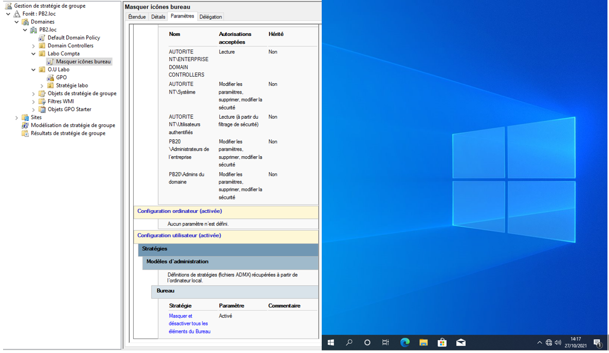
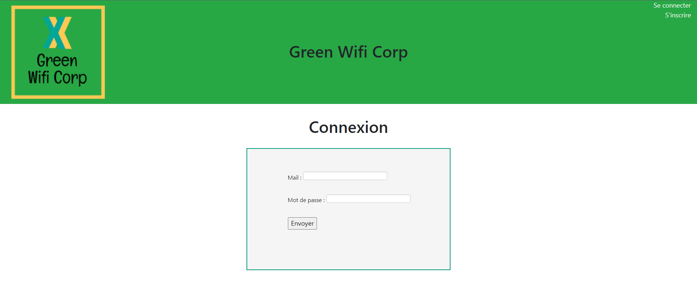
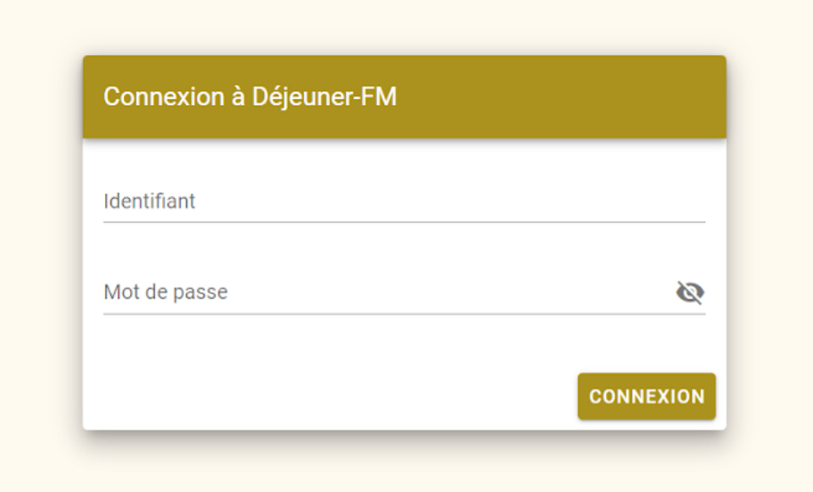
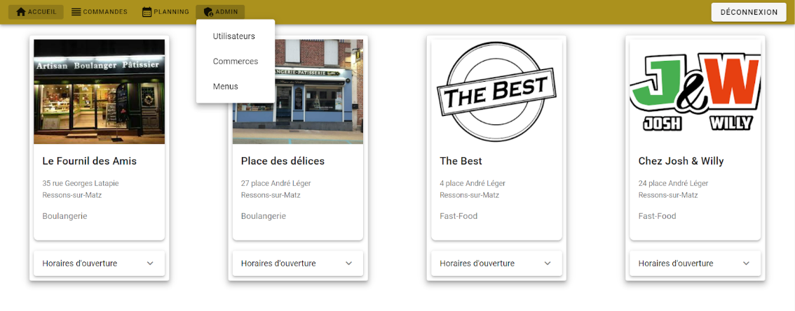
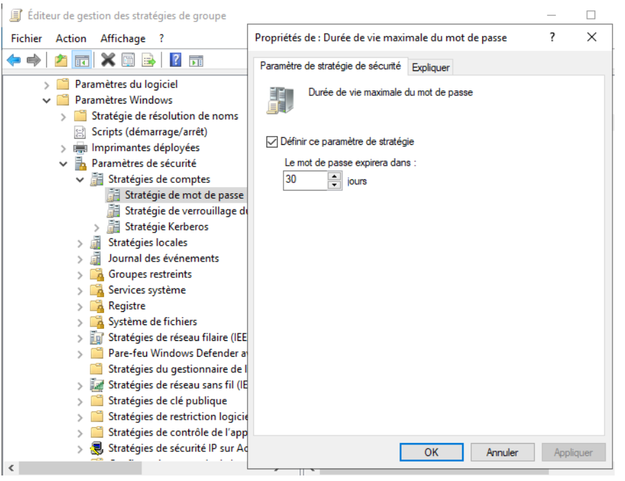

Gérer le patrimoine informatique
Exploiter des référentiels, normes et standards adoptés par le prestataire informatique
Durant un TP active directory, nous avons configuré des GPO (stratégie de groupe). Le but est d'établir
des règles comme le fait d'enlever certaines fonctionnalités du système d'exploitation comme interdire
l'accés au panneau de configuration. Une des stratégies du appliquée lors du TP était
de masquer les icones sur le bureau.

Mettre en place et vérifier les niveaux d’habilitation associés à un service
Sur ces deux années de cursus scolaire, nous avons mis en place sur certains de nos projets
un système de login avec un identifiant et un mot de passe notamment sur notre site web développé
dans le cadre de notre projet poin de première année.

Sur le site web réalisé lors de mon stage chez FM LOGISTIC, nous avons mis en place un
système de connexion pour qu'uniquement les personnes autorisés puissent s'y connecter
et nous avons également développé un système de rôle avec un rôle utilisateur et un rôle
administrateur permettant d'accéder à des fonctionnalités supplémentaires.



Vérifier le respect des règles d’utilisation des ressources numériques
Lors d'un TP active directory, nous avons mis en place des règles pour les utilisateurs et groupes
d'utilisateurs. Ici nous avons fait en sorte que le mot de passe des comptes utilisateurs aient une
durée de vie au maximum de 30 jours.
